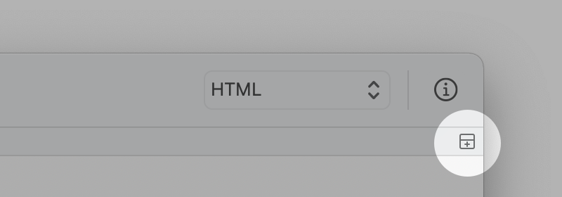

エディタを分割するには、「表示」メニューの「エディタを分割」を選択するか、ナビゲーションバーの右端のアイコンをクリックします。
分割されたエディタを閉じるときは、「表示」メニューの「分割エディタを閉じる」を選択するか、ナビゲーションバーの左に追加されるアイコンをクリックします。

分割方向は環境設定の「ウインドウ」ペインで設定が可能です。「表示」メニューの「ビューを縦に（横に）分割」から現在のエディタの分割の方向を変更することもできます。